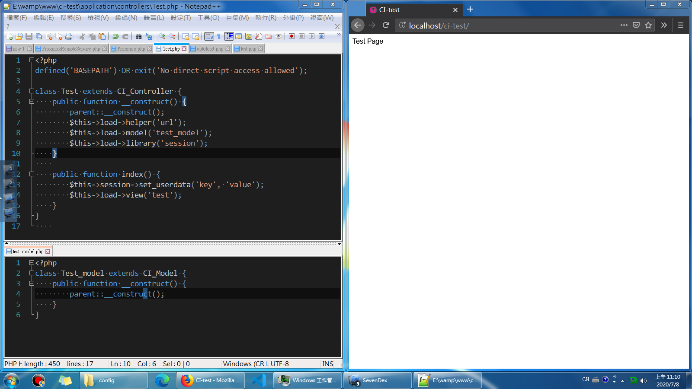
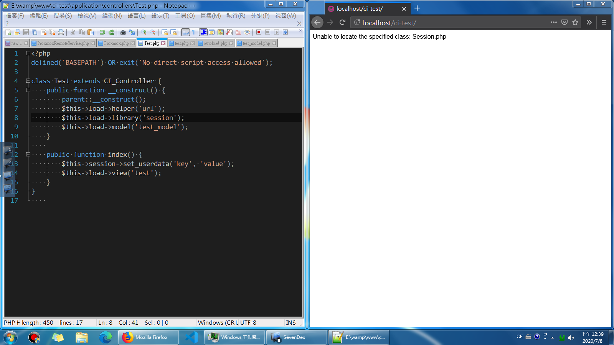
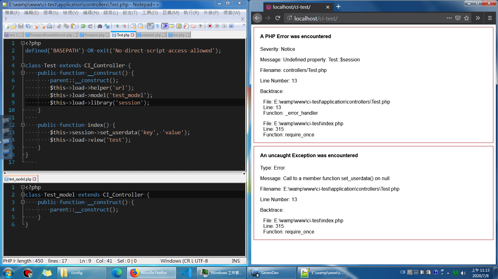

Session載入問題
某些人剛開始寫CI時可能會碰到一種奇特的問題：Unable to locate the specified class
如果透過Google搜尋相關錯誤，你會發現大多跟Session.php有關
不過找不太到這種現象的解釋
即使是目前CI3的最新版本3.1.11依然有可能會出現
這種問題的難點在於無法知道確切的錯誤在哪裡
於是大家通常都是把跟session有關的地方拆掉，例如說 autoload 之類的
問題的起源
重複建立CI_Controller實例
重複建立 CI_Controller 的原因大多是：
- 不小心讓 model 繼承 CI_Controller
- 在其他地方因為某些原因，產生了新的Controller
而重複建立 CI_Controller 會導致它可能因為 load_class 的缺陷而產生錯誤
註： load_class 位於 system/core/Common.php裡面
類別表中已經有該類別存在
如果已經使用了 autoload 或是手動由 loader 去載入 library的話，該類別會被存入內建的類別表中
他們很有可能因為某些原因，被 load_class 方法所在入，這時候就有可能因為 load_class 的缺陷發生錯誤
load_class 的缺陷
大部分的情況，透過 load_class 去載入類別並不會有什麼問題，但是有某些特例，Session 就是其中一種
Session 這種 library 是放在子目錄裡面的
在 loader 載入 library 的最後一個檢查環節中有被處理到，這是我們能成功載入 Session 的關鍵
但是 load_class 卻沒有檢查子資料夾，因此就產生了無法直接載入 class 的錯誤
是這段錯誤訊息的來源
load_class 跟 Controller 的關係
Controller 本身會在一開始自行載入由驅動檔案 CoodeIgniter.php 載入的類別
這個部份是透過 load_class 來進行載入的
但是當後來載入新的 library 之後，該 library 將會被加入至 class 表中，例如說 session
所以當 Controller 再度被建構時，只要使用了 CI_Controller 的建構式子，就會再觸發 load_class
但是這時候就會因為子資料夾的問題，產生了無法載入 class 的錯誤
Session 載入測試
正常情況下的頁面

修改成 CI_Controller 之後的畫面

由於先載入 Session ，因此第二次建立 CI_Controller 時 load_class 會嘗試載入 Session
載入順序對調（Library 跟 Model 對調）

因為是後來才載入 Session ，所以重複產生 Controller 並不會造成影響
不過由於 CI3 的設計，$CI->get_instance() 會是新產生的 Controller
因此原本的 Test 就不會有 $session 變數，反而是 Test_model會有
結語
這些問題引發的原因通常是因為載入未預期的 class
有可能是來自於自己錯誤的寫法，也有可能是其他 library 所造成
但不論怎麼說，最後都會在 load_class 這個環節出錯
如果發現了這個問題存在，建議在 load_class 拋出錯誤來尋找來源
看是因為未預期的 library 被載入，或是哪個地方重複呼叫了 CI_Controller 的建構式